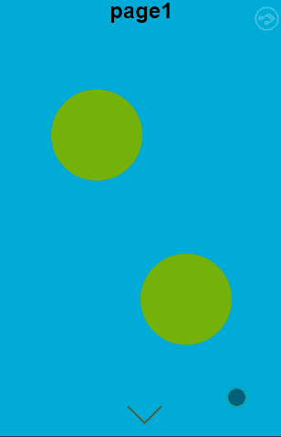
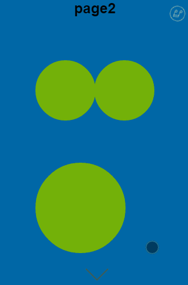
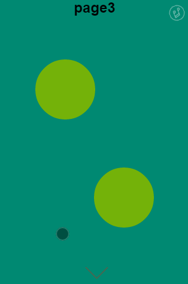
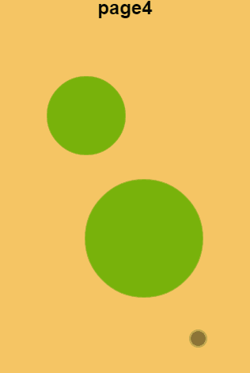

Welcome to use H5fullscreenpage.js
This project can help you build a smaple scroll page quickly based on zepto.js or jquery.js. It not only can use in pc but also in mobile with high performance. Support music,css animation and you can choose some you like!
<link rel="stylesheet" type="text/css" href="H5FullscreenPage.css">
<script type="text/javascript" src="zepto.js"></script>
<script type="text/javascript" src="H5FullscreenPage.js"></script>
If you want to use css animation in your project,you can also include:
<link rel="stylesheet" type="text/css" href="page-animation.css">
HTML
<div class="H5FullscreenPage-wrap">
<div class="item">
</div>
<div class="item">
</div>
<div class="item">
</div>
<div class="item">
</div>
<div class="item">
</div>
</div>
Give a div with class .H5FullscreenPage to wrap some div with class .item.
Javascript
H5FullscreenPage.init();
Now, a sample can be run like this
Use animation
You can use div with class .part to identify this is a animation part. And H5FullscreenPage provide some css animation to use. Dont forget to include page-animation.css
<div class="item">
<h2>page1</h2>
<div class="part fadeIn"></div>
<div class="part fadeIn"></div>
</div>
<div class="item">
<h2>page2</h2>
<div class="part slideRight" data-delay="1300"></div>
<div class="part slideLeft"></div>
<div class="part zoomIn"></div>
</div>
<div class="item">
<h2>page3</h2>
<div class="part slideUp"></div>
<div class="part slideDown"></div>
</div>
<div class="item">
<h2>page4</h2>
<div class="part heartBeat"></div>
<div class="part heartBeat"></div>
</div>
<div class="item">
<h2>page5</h2>
<div class="part rollInRight"></div>
<div class="part rollInLeft"></div>
</div>
slideDown
slideUp
heartBeat
rollInRight
parallax
Demo Page
Support or Contact
Having trouble with Pages? Check out the documentation at https://github.com/lvming6816077/H5FullscreenPage/blob/master/README.md